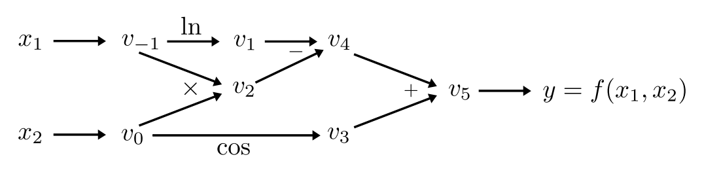
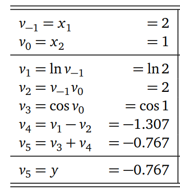
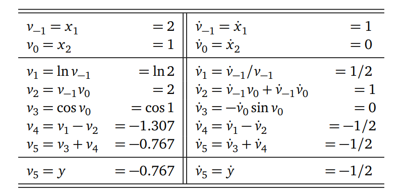
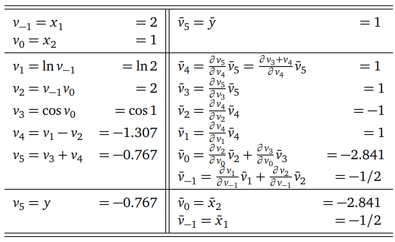

We can distinguish three methods for calculating (partial) derivatives of a function \(f: \mathbb{R}^m \to \mathbb{R}\) in a computer program.
Finite differences method:
Simplest approach is to use finite difference method. For a given function \(f\), the components of its gradient
\[\begin{equation}
\nabla f = \big(\frac{\partial f}{\partial x_1},\cdots,\frac{\partial f}{\partial x_m}\big),
\end{equation}\] can be approximated as \[\begin{equation}
\frac{\partial f(\vec{x})}{\partial x_i} \sim \frac{ f(\vec{x} + h\vec{e}_i) - f(\vec{x})}{h},
\end{equation}\] where \(\vec{e}_i \in \mathbb{R}^m\) is the \(i\)-th unit vector and \(h\) is small step size. However, aproximating \(\nabla f\) requires \(\mathcal{O}(m)\) evaluations of f. Additionally round-off errors due to floating-point arithmetic dominate the errors as \(h\to 0\).
Symbolic differentiation
Calculating derivatives is done by automated manipulation of mathematical expressions allowing obtain explicit results (with help of computer algebra systems such us Mathematica, Maple, Maxima). For example for two given functions \(f(x)\) and \(g(x)\) derivative of their product is calculated explicitly following
The benefit of symbolic expression is that results are interpretable and allow find analytical solutions. However, symbolic derivatives generated through symbolic differentation typically do not allow for efficient calculations of derivative values.
Automatic differentiation allows to obtain exact numerical value of the derivatives without the need of the symbolic expression - this method lies between symbolic differentiation and numerical differentiation.
The logic lying behind AD is that all numerical computations are compositions of a finite set of elementary operations for which derivatives are known. By combining the derivatives of the constituent operations through the computational diagram, and applying the chain rule for derivatives, we can obtain exact numerical of the derivative of the overall expression for a given input.
2 Computational graph
A computational graph is a graph-based representation of a mathematical computation. It is a way of visually representing the operations performed in a computation, and the dependencies between these operations.
2.1 Forward function evaluation
Let us consider expression \(f(x_1,x_2) = \ln x_1 + \cos x_2 - x_1 x_2\), Function \(f\) is a mapping \(f: \mathbb{R}^n \to \mathbb{R}^m\) with \(n = 2\), \(m=1\).
Following [1], we introduce the notation for the computational graph as follows:
Input variables are denoted as \(v_{1-i}\), where \(i = 1,\dots,n\).
Intermediate variables are denoted as \(v_i\), \(i = 1,\dots,l\).
Output variables are denoted as \(v_{l+i}\), \(i = 1,\dots,m\).
The computational graph related to considered function \(f(x_1,x_2)\) is

computational-graph.png
Exercise
Calculate value of \(f(x_1,x_2)\) at \((x_1, x_2) = (2,1)\) via passing the diagram from left to right: 
2.2 Calculating gradients
Automatic differentiation allows us to calculate exact value of the gradient at given point. In our example, we are interested in value of \(\frac{\partial f}{\partial x_1}\) at given point \((x_1, x_2) = (2,1)\). This can be obtain in two modes.
2.2.1 Forward-mode AD
Forward-mode AD is implemented by complementing each intermediate variable \(v_i\) with a derivative: \[\begin{equation}
\dot{v}_i = \frac{\partial v_i}{\partial x_1},
\end{equation}\] and by applying chain rule for differentiation we can obtain desired gradient. Derivativeas are propagated forward in sync with the function evaluation.
Exercise
Calculate value of \(\frac{\partial f}{\partial x_1} = \dot{v}_5\) at \((x_1, x_2) = (2,1)\) through passing the diagram: 
Dual numbers and forward-mode AD
In practive, forward-mode is implemented by extending the algebra of real numbers via introducing \(\textit{dual}\) numbers, defined as \[\begin{equation}
\tilde{z}_1 = a_1 +\epsilon b_1,
\end{equation}\] where \(a,b \in \mathbb{R}\), and \(\epsilon^2 = 0\). Next, addition and multiplication of dual numbers is defined as:
Next, when we consider Taylor series expansion around \(\epsilon\), we have
\[\begin{equation}
f(z) = f(a+\epsilon) = f(a) + f'(a)\epsilon + \frac{1}{2}f''(a)\epsilon^2 + \dots,
\end{equation}\] we see that this simplifies to \[\begin{equation}
f(a+\epsilon) = f(a) + \epsilon f'(a),
\end{equation}\] which means that operations on dual number \(a\) automatically provides numerical value for \(f(a)\) and derivative \(f'(a)\).
In numerical implementation, dual numbers are handled by operator overloading where all mathematical operators are working appropriately on the new algebra of dual numbers.
2.2.2 Reverse-mode (backpropagation) AD
In a reverse mode we calculate gradients backwards. Let’s have a look at our computational graph once more time:
computational-graph.png
We are interested in calculating derivative of \(y\) with respect to \(v_i\), i.e. $ $. For a computational graph we can write the chain rule as \[\begin{equation}
\frac{\partial y_j}{\partial v_i} = \frac{\partial y_j}{\partial v_k}\frac{\partial v_k}{\partial v_i},
\end{equation}\] where \(v_k\) is a parent of a \(v_i\) in a computational graph. When \(v_i\) has more than one parent we sum up the chain rule as: \[\begin{equation}
\frac{\partial y_j}{\partial v_i} = \sum_{p\in parents(i)} \frac{\partial y_j}{\partial v_p}\frac{\partial v_p}{\partial v_i}.
\end{equation}\] In the literature the above expression is called as \(\textit{adjont}\) and denoted as \[\begin{equation}
\bar{v}_i = \frac{\partial y_i}{\partial v_i}.
\end{equation}\]
Next, we can rewrite the adjont in term of the adjonts of the parents, i.e. \[\begin{equation}
\bar{v}_i = \sum_{p\in \text{parents(i)}} \bar{v}_p \frac{\partial v_p}{\partial v_i}
\end{equation}\] which gives us a recursive algorithm node \(y\) with setting starting point as \(\bar{y} = 1\).
In other words, with the single backward pass we have both \(\frac{\partial y}{\partial x_1}\) and \(\frac{\partial y}{\partial x_2}\) (in forward mode we can obtain \(\frac{\partial y}{\partial x_1}\) in one pass).
Exercise
Calculate value of \(\frac{\partial f}{\partial x_1} = \dot{v}_5\) at \((x_1, x_2) = (2,1)\) through passing the diagram: 
How to choose between forward-mode and reverse-mode?
Let’s consider function \(f:\mathbb{R}^m \to \mathbb{R}^n\)
If \(m \ll n\), i.e. number of inputs is much smaller than number of outputs, from computational point of view it is more faborable to use forward-mode automatic differentiation.
If \(m \gg n\), i.e. number of inputs is much larger than number of outputs (and this is the case of neural networks), from computational point of view it is more faborable to use backward-mode automatic differentiation.
2.3 Calculating gradietns with PyTorch: torch.autograd
torch.autograd is PyTorch’s automatic differentiation engine that helps in neural network training.
2.3.1 Example 1
To compute the gradient of a scalar function \(f\) with respect to a single variable \(x\), we can use PyTorch’s autograd module. For example:
import torch# Create a tensor with requires_grad set to Truex = torch.tensor([4.0], requires_grad=True)# Define a scalar function fdef f(x):return x **2# Compute the gradient of f with respect to xy = f(x)y.backward()# The gradient of f with respect to x is stored in x.gradprint(x.grad)
tensor([8.])
2.3.2 Example 2
To compute the gradient of a function with respect to multiple variables, we can pass a tensor with requires_grad set to True to the function and then use the backward method on the resulting tensor.
import torch# Create tensors with requires_grad set to Truex = torch.tensor([1.0], requires_grad=True)y = torch.tensor([1.0], requires_grad=True)z = torch.tensor([1.0], requires_grad=True)# Define a function that takes two variables as input and returns their sumdef f(x, y, z):return torch.log(torch.sin(x) + torch.tanh(y**2))/z# Compute the gradient of f with respect to x and yg = f(x, y, z)g.backward()# The gradients of f with respect to x and y are stored in x.grad and y.gradprint(x.grad) print(y.grad) print(z.grad)
We are interested in change of the ground state energy \(E_{0}\) as a function of \(\kappa\) parameter. To tackle this problem, we have to first calculate eigenstates of the considered Hamiltonian.
Let us consider equaly distributed set of points \(x_i\) lying in interval \([-L/2, L/2]\) with \(\Delta x = \frac{L}{N_x}\), where \(N_x\) is a number of discretization points.
First, we have to, i.e. solve the eigenproblem of the form \[\begin{equation}
\bar{H}\vec{\psi}_n = E_n \vec{\psi}_n,
\end{equation}\] where \(\bar{H}\) is \(N_x\times N_x\) matrix representation of Hamiltonian \(\hat{H}\) in a discretized space. After constructing the matrix \(\bar{H}\), we can diagonalize it, and find eigenvectors \(\vec{\psi}_n\), and corresponding eigenvalues \(E_n\). Note, \(n\in \{0,N_x\}\).
Discrete second-order derivative and Hamiltonian matrix representation
To construct the matrix representation of \(\hat{H}\), we have to implement discrete second order derivative: \[\begin{equation}
\frac{\partial^2 \psi(x)}{\partial x^2}\big|_{x} \approx \frac{\psi_{i+1} - 2\psi_i + \psi_{i-1}}{\Delta x^2}
\end{equation}\]
The matrix representation of the kinetic part of the Hamiltonian \(\hat{H}\) is
The matrix representation of the potential part of the Hamiltonian \(\hat{H}\) is a diagonal matrix with elements \([\bar{H}_\text{V}]_{i,j} = \delta_{i,j} \big(\frac{1}{2}x_i^2 + \kappa e^{-x_i^2/2} \big)\)
Now, the Hamiltonian matrix representation is simply \(\bar{H} = \bar{H}_T + \bar{H}_V\).
Let’s import necessary libraries
import matplotlib.pyplot as pltimport torchimport numpy as npfrom torch.linalg import eigh
Let’s define function returning matrix of the considered Hamiltonian. First, let’s define system size \(L = 10\), \(N_x = 500\) discretization points, function returning external potential and function returning matrix representation of the Hamiltonian:
Pytorch function torch.eigh calculates eigenfunctions and eigenvalues of a given matrix: this allows us to write two functions returning ground state energy \(E_{\text{GS}}\), and ground state gap \(\Delta E\), i.e. energy difference between two first eigenenergies:
def get_energy_ground_state(kappa): H = get_H(kappa) Energies, Vectors = eigh(H) E_GS = Energies[0] return E_GSdef get_gap(kappa): H = get_H(kappa) Energies, Vectors = eigh(H) gap = Energies[1] - Energies[0] return gap
Let’s see density of few first eigenstates of the Hamiltonian for given parameter \(\kappa\):
where \(\vec{x}\) are inputs, while \(\vec{y}\) are outputs (e.g. predicted labels), and \(j = 0,\dots,K\) enumerates layers of the network. The input data flow can be decomposed in the following steps:
Since we’ll mostly be discussing autograd in the context of training, our output of interest will be the model’s loss function \(L\), which is a single-valued scalar function of the model’s output. This function expresses how far off our model’s prediction was from a particular input’s ideal output.
We try to obtain that by an iterative process of passing the training data, and updating the weights according to gradient of the loss function with respect to the training parameters \(\theta = \{W_0, b_0, W_1, b_1, \dots, A_{K-1}, b_k\}\). The gradient of the loss function with respect to the parameters set \(\theta\) requires the partial derivatives with respect to \(\theta_j = \{W_j, b_j\}\) of each layer \(j = 1,\dots,K\):
As such, assuming we have already computed \(\frac{\partial L}{\partial \theta_{i+1}}\) it can be reused to compute \(\frac{\partial L}{\partial \theta_{i}}\) - which is a reverse-mode AD.
Autograd lies at the heart of building machine learning projects. It allows automatic calculation of gradient of the custom loss function for the Neural Network with respect to it’s parameters.